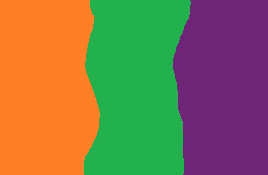

Rojo

Azul
Amarillo
Colores secundarios
Arte y diseño
La teoría del color es un conjunto de reglas y pautas que los diseñadores utilizan para comunicar con los colores de manera visualmente atractiva.
Los colores se clasifican en colores primarios, colores secundarios y colores terciarios.
Los colores primarios son: rojo, azul y amarillo. A partir de ellos se pueden crear todos los demás colores.
El uso adecuado del color puede influir en las emociones y percepciones de las personas, por eso es una herramienta muy poderosa en diseño gráfico, arte y publicidad.
|
Rojo |
Azul |
Amarillo |
|
 Colores secundarios |
Más sobre teoría del color |
Arte y diseño |